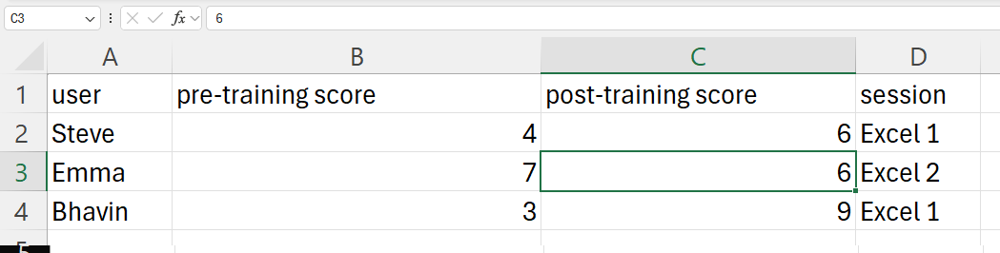
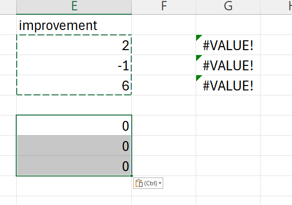
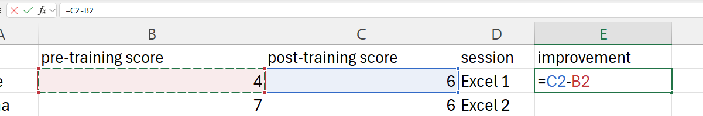

References and names in Excel
excel
beginner
Previous attendees have said…
- 38 previous attendees have left feedback
- 97% would recommend this session to a colleague
- 92% said that this session was pitched correctly
Three random comments from previous attendees
- Good to know the short cut keys and the real time practice is really useful
- Great session, basic information, easy to follow + tips for those that need a refresher. Some good shortcuts shared. Very useful training.
- Quite easy to understand - for an old bird :)
Welcome!
- this session is for üå∂ Excel beginners
- we’ll do an initial chat and run through, followed by a practical demo
- you’re welcome to stay for all or part of the session
- if you want to follow the practical part, you’ll need Excel of some kind
- if you can’t access the chat, you might need to join our Teams channel: tinyurl.com/kindnetwork
Session outline

- this is a beginners session about references and names in Excel
- it assumes you’ll have done some first-steps training beforehand
- this is social learning (cameras, contribute, calm)
- we’ll run through the basics of references and names, and then move into a practical demo
Some sample data
| user | DoB | visit_date | service |
|---|---|---|---|
| Steve | 12/11/1984 | 26/04/2024 | podiatry |
| Emma | 05/06/1999 | 24/05/2024 | respiratory |
| Bhavin | 11/04/1976 | 23/04/2024 | dietetics |
References
- Excel sheets are made up of cells
- cells are arranged in rows and columns
- columns have letters - like
C - rows have numbers - like
3
- columns have letters - like
- references are the ‘address’ of a particular cell - like
C3- you can ‘point’ at a cell by using its reference
Finding a reference
- from the name box:
 - or work out from the column and row labels
- always column letter, then row number
- C3, not 3C
Using a reference
- we can write a formula that copies the value from C3 into another cell
- formulas start with an
= - so we’ll use
= C3to get Emma’s visit date (or whatever value you referenced)
References in formulas
- we use references to allow us to pass data around our spreadsheet
- an example: how long ago was the service visit?
- calculate the number of days since the last visit with
= C3 - TODAY()
References move
- by default, Excel references are relative
- when you move a reference, the cell that reference points to also moves
 - it is possible to ‘fix’ references
- we call these absolute references
- the
$fixes a reference, so$C$3is absolute
You can name things
- almost everything in Excel can be named
- the easy way to start with that is using the name box
- names can replace references in formulas
- this is valuable when things get more complicated
You can use and manage names
- via the Name manager (
Ctrl+F3) - Go to (
F5)
Practical
Using a reference
- we can write a formula that copies the value from C3 into another cell
Tip
- go to an empty cell, type
= C3, and pressEnter/⏎ - that cell should now have Emma’s visit date (or whatever value you referenced)
References in formulas
- how long ago was the service visit?
Task
- add a new column called last_visit
- in cell
E2, add the following formula:= TODAY() - C2- that calculates the number of days since the last visit
- you may need to correct the formatting

- then copy/fill down
References move
Task
- try copying your new block of last_visit cells around your sheet
- their value should change
- now try clicking those cells to see where the updated reference points to
Absolute references
Task
- delete your copied blocks of cells from the last step
- now update your references by adding
$before the letter and number- so
C2becomes$C$2 - you might prefer to press
F4instead
- so
- now copy and paste those blocks of cells again. What’s different this time?
- please delete those new blocks of cells when you’re finished
You can name things
Task
- let’s average the last_visit column
- in a new cell (
G2perhaps?) add this formula:=AVERAGE(E2, E3, E4)
- now name that new cell
av_lengthand try using it in a formula= INT(av_length)would round that to the nearest day= E2 / av_lengthwould give you the percentage of average
You can manage those names
Task
- find the Name manager (or press
Ctrl+F3)

- try renaming your
av_lengthcell - try making a new named range from your three
last_visitcells - try using the
F5Go to interface to navigate between your named cells